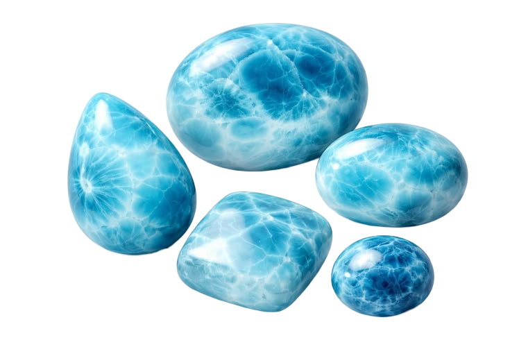

Larimar was first discovered in 1916 by Priest Miguel Domingo Fuertes in the province of Barahona, but it remained largely unknown for decades. It was not until 1974, when Miguel Méndez rediscovered the stone, bringing international attention to what is now one of the Dominican Republic's most treasured natural gems.
Larimar is one of the rarest gemstones in the world because it can only be found in the southwestern region of Dominican Republic, specifically in the mountains near Barahona.
Larimar is often associated with peace, compassion, and emotional balance. Inspired by the colors of the Caribbean Sea and sky, it represents calmness, self-expression, and a deep connection to nature. For many, it serves as a reminder to embrace inner strength and serenity.
Miguel Méndez created the name by combining "Lari," the nickname of his daughter Larissa, with "mar," the Spanish word for sea. Together, they formed Larimar, a name inspired by both family and the Caribbean's brilliant blue waters.